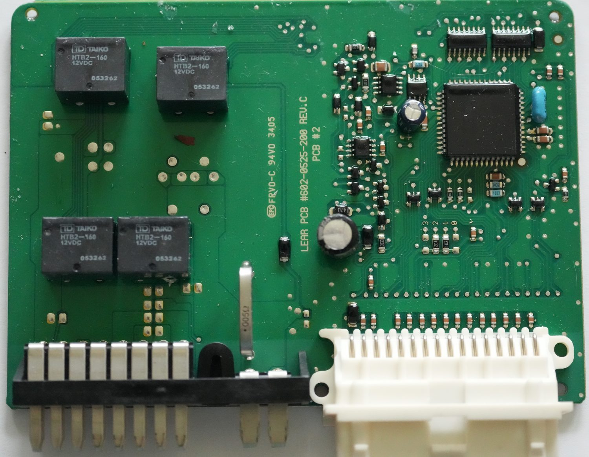

2004–2009 Cadillac XLR
XLR Folding Top Control Module
New-build replacement for the discontinued FTC — controls the convertible top, deck lid, and tonneau sequence. Drop-in fit on the factory harness.
View module →
GM PCM tool · re-engineered
PowrTuner
DHP's GM programming tool, rebuilt from the ground up — and no longer just for engine tuning. Read, write, and diagnose across more of the vehicle.
View PowrTuner →
J2534 interface · open hardware
Kepler Interface
A low-cost vehicle interface with J2534 support and standalone diagnostics — CAN, GM VPW, Bluetooth, and SD logging in one device.
View Kepler →
Don't see your part?
Chasing a discontinued GM module, or want a tool for a system we haven't covered? Tell us the year, model, and part — demand is how we choose what to build next.
Request a part